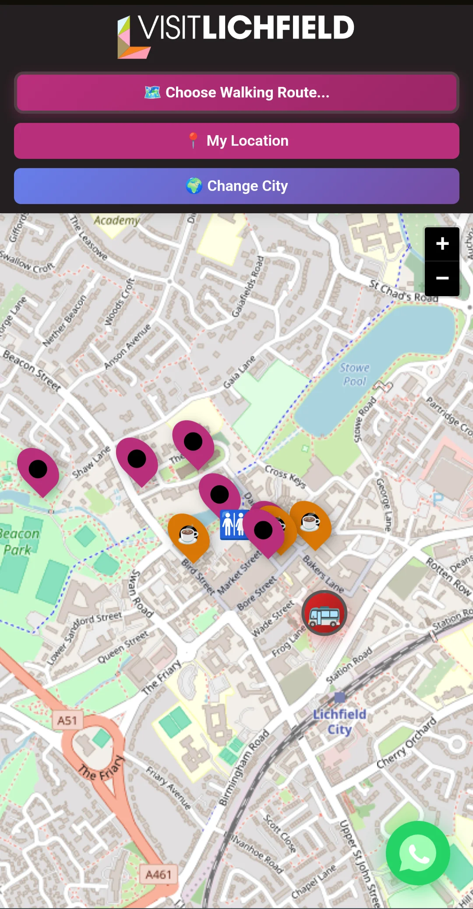
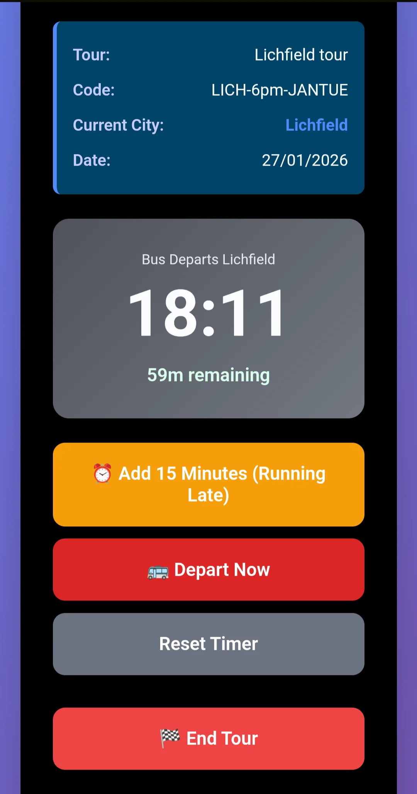
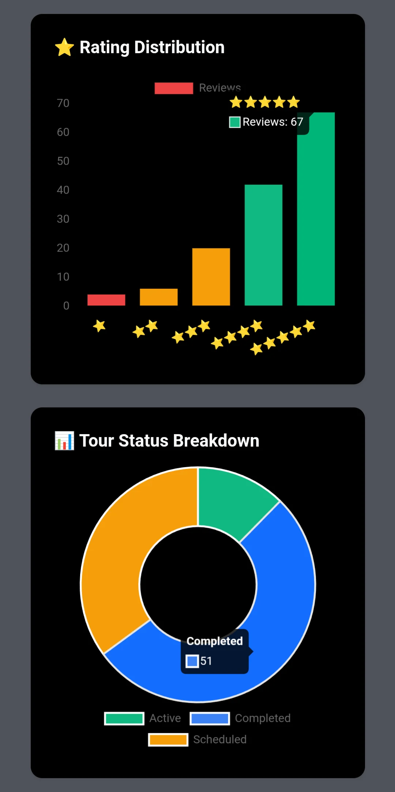

What I Built
VisitLichfield is a multi-city tour coordination platform built as three separate React applications backed by a shared Node.js REST API and MySQL database. The three apps serve distinct user roles: tourist (GPS navigation, audio guides, tour joining), driver (tour creation and management), and admin (analytics, user management, driver approval).
The platform currently covers Lichfield and York. Switching city via the driver app dynamically updates the tourist-facing maps, attraction pins, and tour routes through the API — no redeployment required.
Architecture
Three separate frontends share one backend. Each app authenticates against the same user table but receives different JWT claims based on role, which the API enforces at route level. The tourist app never touches driver or admin endpoints; the driver app cannot access admin-only routes.
City-switching is handled at the API level. The driver selects a city when creating a tour. That city ID propagates through the API response to the tourist app, which re-queries the attractions, map bounds, and tour route endpoints for that city. The tourist map updates without a page reload.
The Three Dashboards
Tourist App
Real-time GPS on Leaflet/OpenStreetMap. Attraction pins open audio guides (ElevenLabs API), transcripts, and 3D models. Tour joining with QR check-in, partner discount codes, and a smart feedback gate: 1–3 stars prompts a written review, 4–5 redirects to Google.
Driver App
Drivers create city-specific tours that tourists can join. Start/end time controls, 15-minute extension option, real-time tourist check-in counts. Switching city updates the tourist map immediately via the API. Profile management: name, password, photo.
Admin Panel
Analytics dashboard: driver stats (tours completed, average ratings), tour metrics (attendance, feedback comments), user activity. Role-based account creation, driver application approval, access restriction, password reset, and feature request tracking.
The Three Apps

Tourist App

Driver Dashboard

Admin Panel
Key Engineering Details
Role-based auth: A single login endpoint issues JWTs with a role claim. Middleware on each route checks the claim against an allowlist. Tourists cannot hit driver routes; drivers cannot hit admin routes. Account creation is role-aware — an admin creates a driver account, not the driver themselves.
City-switching API: The driver's city selection is stored against the active tour record. A tourist joining that tour inherits the city context. Subsequent map and attraction queries include the city ID as a parameter. Adding a new city requires a database entry and asset upload — no code changes.
QR check-in: Each tour generates a unique QR code. Scanning it marks the tourist as checked in against that tour record and unlocks the tour-specific content layer in the tourist app.
Audio guides: Attraction audio is generated via the ElevenLabs API and stored on the server. The tourist app fetches the audio URL when a pin is tapped, rather than streaming live from ElevenLabs on each request.
Security audit: The platform went through a security review covering SQL injection vectors, JWT validation, and access control bypass scenarios before the first client demo.